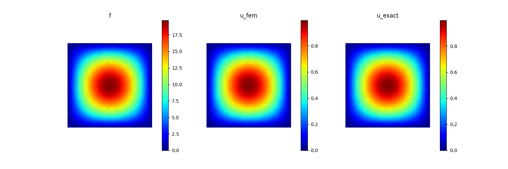

快速开始¶
一个完整的二维泊松示例：定义网格、用纯 Python 编写弱形式、施加狄利克雷边界条件并求解。完整脚本约 30 行，在笔记本电脑的 CPU 上远不到一秒即可运行完毕。
问题描述¶
在单位正方形 \(\Omega = (0, 1)^2\) 上，以齐次狄利克雷边界条件求解泊松方程：
我们取 \(f(x, y) = 2\pi^{2} \sin(\pi x)\sin(\pi y)\)，使得解析解为 \(u(x, y) = \sin(\pi x)\sin(\pi y)\)——便于在最后对有限元结果进行合理性检验。
完整脚本¶
import math
import torch
from tensormesh import ElementAssembler, NodeAssembler, Mesh, Condenser
# 1. Generate a triangular mesh of the unit square.
mesh = Mesh.gen_rectangle(chara_length=0.05)
# 2. Stiffness weak form: a(u, v) = ∫ ∇u · ∇v dΩ.
class LaplaceAssembler(ElementAssembler):
def forward(self, gradu, gradv):
return gradu @ gradv
# 3. Load weak form: l(v) = ∫ f v dΩ.
class SourceAssembler(NodeAssembler):
def forward(self, v, f):
return f * v
# 4. Source term f = 2π² sin(πx) sin(πy), evaluated at every mesh node.
x, y = mesh.points[:, 0], mesh.points[:, 1]
f_vals = 2 * math.pi**2 * torch.sin(math.pi * x) * torch.sin(math.pi * y)
# 5. Assemble the stiffness matrix K and load vector b.
K = LaplaceAssembler.from_mesh(mesh)()
b = SourceAssembler.from_mesh(mesh)(point_data={"f": f_vals})
# 6. Apply homogeneous Dirichlet BCs via static condensation, then solve.
condenser = Condenser(mesh.boundary_mask)
K_, b_ = condenser(K, b)
u = condenser.recover(K_.solve(b_))
# 7. Compare against the analytical solution and visualize.
u_exact = torch.sin(math.pi * x) * torch.sin(math.pi * y)
print(f"L2 error: {(u - u_exact).norm() / u_exact.norm():.3e}")
mesh.plot({"f": f_vals, "u_fem": u, "u_exact": u_exact}, save_path="poisson.png")
运行此脚本会打印类似 L2 error: 3.162e-03 的内容，并将源项 f、有限元解和解析解的并排对比图写入 poisson.png：
{kind=link}

备注
在 GPU 上运行。 在创建网格之后添加一行代码即可:
mesh = mesh.to("cuda")
此后，所有由 mesh 派生出的张量（装配得到的矩阵、载荷向量、凝聚后的求解）都会自动驻留在 GPU 上——这里的 f_vals 也包括在内，因为它是由 mesh.points 构建的。只有那些独立于网格而构造的张量才需要显式迁移，例如 my_tensor = my_tensor.to(mesh.device)。
备注
内置装配器。 上述拉普拉斯和源项形式十分常见，因此 TensorMesh 提供了现成的版本（LaplaceElementAssembler、func_node_assembler() 等），通常你无需手动编写它们。完整目录请参阅 内置装配器。
逐步讲解¶
网格。 Mesh 存储节点、单元，以及附着其上的任何逐节点／逐单元数据。gen_rectangle() 会生成 \((0, 1)^2\) 的三角形网格，目标单元尺寸为 chara_length（值越小→网格越精细）。
弱形式。 这两个 forward 方法是你需要编写的、唯一 与 PDE 相关的部分——装配由库来处理。在 ElementAssembler 内部，参数 gradu、gradv 是已经在每个单元的每个求积点上求值好的基函数梯度；你只需返回被积函数，其余交由库来完成。NodeAssembler 对依赖于逐节点数据的向量值被积函数采用相同的工作方式：通过 point_data={...} 传入数据，并以同名关键字参数的形式接收它。
装配。 Assembler.from_mesh(mesh)() 返回一个 SparseMatrix（对于 ElementAssembler）或一个 torch Tensor（对于 NodeAssembler）。在内部，所有运算都会被融合进单个张量化的 GPU 内核——不存在对单元的 Python 层级循环。
边界条件。 Condenser 通过 静态凝聚 来施加狄利克雷边界条件：condenser(K, b) 返回一个仅在内部自由度上的缩减系统。求解缩减系统后，recover() 会将内部解与给定的边界值重新拼合，从而得到整个网格上的解。
求解。 solve() 会分派到某个稀疏求解器后端——在 CPU 上默认使用 SciPy，在 GPU 上默认使用 torch-sla 的迭代求解器。完整的后端矩阵请参阅 稀疏求解器。
收敛性。 在默认网格上，报告的 L2 error 应约为 ≈ 3e-3；将 chara_length 减半，误差大致下降为原来的四分之一——这正是线性三角形单元所应有的二阶收敛。